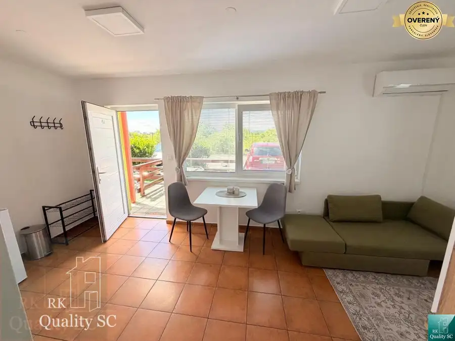

Okres SENEC - obec ČATAJ - NA PREDAJ 4. izbový priestranný mezonetový
Čataj
- Dispozícia4-izbový
- Plocha99.8 m²
- Poschodie1.
- Stavpôvodný
- Vlastníctvoosobné
O nehnuteľnosti
Lokalita:
ul. Hlavná, Čataj.
Pozrite si autentické video bytu:
https://youtube.com/shorts/uM_E1pTua-E?feature=shared
RK Quality SC Vám ponúka na predaj 4. izb. priestranný a dobre dispozične riešený mezonetový byt v pokojnej obci Čataj. Je ideálny pre rodinu alebo pre tých, ktorí hľadajú komfortné bývanie s dostatkom priestoru.
Byt je rozdelený na dve podlažia a podkrovie.
Celková výmera bytu je približne 99,80 m2 + podkrovie.
Prízemie: vstupná chodba, kuchyňa, priestranná obývacia izba, kúpeľňa so sprchovým kútom a toaletou, schodisko.
Poschodie: 3 samostatné priestranné izby, kúpeľňa s vaňou, toaleta.
Z jednej izby a taktiež aj z kúpeľne vedie schodisko do zobytneného podkrovia, ktoré Vám ponúka ďalší variabilný priestor – ideálny ako pracovňa, kancelária, ateliér alebo oddychová zóna. Byt sa predáva čiastočne zariadený (iba kuchyňa a obývacia izba), presne tak, ako je na fotografiách a vo videu. Na fotkách je reálny stav bytových priestorov a taktiež ako môžu jednotlivé miestnosti vyzerať po rekonštrukcii podľa vlastných predstáv.
Byt poskytuje dostatok súkromia a priestoru pre každého člena domácnosti. Vďaka praktickému dispozičnému riešeniu a možnosti využitia podkrovia ide o výnimočnú nehnuteľnosť s potenciálom prispôsobiť si ju podľa vlastných predstáv.
Susedia sú dlhoroční vlastníci, za domom sa nachádza priestranné parkovisko pre všetkých vlastníkov bytového domu. Majitelia bytov si udržujú záhradku s výsadbou a taktiež miesto pre posedenie. Výhodou je, že v bytovom dome sa nachádzajú len 4 byty.
Lokalita:
Obec Čataj sa nachádza medzi mestami Senec a Trnava, čo zaručuje výbornú dostupnosť do viacerých smerov.
• Senec: cca 10 km
• Trnava: cca 25 km
• Bratislava: cca 35 km
Lokalita ponúka pokojné bývanie mimo ruchu mesta s dobrou dostupnosťou do hlavných dopravných ťahov a kompletnou občianskou vybavenosťou v blízkom okolí.
Pre viac informácií alebo dohodnutie obhliadky nás neváhajte kontaktovať.
Mesačné náklady 150,-EUR.
Cena bytu: 166 000,-EUR (aj na HÚ).
Kontakt: Jana Donáthová, RK Quality SC, mobil , pevná linka , mail:
Zvyšujeme kvalitu služieb v našej Realitke Qualitke, bez zvýšenia našej odmeny:
• poskytujeme najvyššiu právnu ochranu pre svojich klientov formou autorizovaných Kúpnych zmlúv našou advokátkou
• podávame konania na kataster elektronicky (kratšia lehota na povolenie vkladov - namiesto do 30 kal. dní bude vklad povolený do 20 kal. dní pri štandardnom konaní a do 15 kal. dní pri zrýchlenom konaní)
• platíme všetky náklady súvisiace s autorizáciou Kúpnych zmlúv, s overením totožnosti predávajúcich (netreba chodiť k notárovi, či na matriku, pri autorizovaní KZ sa v našej kancelárii overia podpisy predávajúcich) a s povolením vkladu vlastníckeho práva na katastri (správne poplatky)
• Rezervačné zmluvy podpisujeme digitálne/online cez SIGNI (šetríme Váš čas, energiu, pohonné hmoty, parkovné…)
• „NÁŠMU KUPUJÚCEMU GARANTUJEME VRÁTENIE REZERVAČNÉHO POPLATKU V PLNEJ VÝŠKE V PRÍPADE, KEĎ MU NEZABEZPEČÍME FINANCOVANIE NEHNUTEĽNOSTI Z NAŠEJ PONUKY PROSTREDNÍCTVOM NÁŠHO HYPOPORADCU
• plus ďalšie benefity pre Vás
ZABEZPEČÍME VÁM VÝHODNÚ HYPOTÉKU A DOFINANCOVANIE TEJTO NEHNUTEĽNOSTI - ZDARMA (pretože nášho hypoporadcu platia banky) A PROMPTNE - vybavte všetko na jednom mieste, rýchlejšie a lacnejšie ako kdekoľvek inde. U NÁS NEPLATÍTE NÁKLADY ZA ZNALECKÝ POSUDOK A OSTATNÉ POPLATKY, ak využijete služby nášho hypoporadcu.
Navštíviť nás môžete osobne na adrese:
RK Quality SC, Lichnerova 25, 903 01 Senec - na pešej zóne - v obchodnom centre KOCKA (na prízemí - hneď pri ČSOB).
Parametre
| Úžitková plocha | 99.8 m² |
|---|---|
| Poschodie | 1 |
| Počet izieb | 4 |
| Vlastníctvo | osobné |
| Stav | pôvodný |
| Pivnica | áno |
| Parkovanie | verejné |
| Postavené z | tehla |
| Dátum zverejnenia | 13. 9. 2026 |
Kde to je
Mohlo by Vás zaujímať
 Byt8
125 000 €Slnečné jazerá - BOLDOG - NA PREDAJ - plnohodnotný 1 izbový byt v blíz
Boldog
1-izbový30.54 m²1. podlažie
Lokalita: obec Boldog - PRI SLNEČNÝCH JAZERÁCH SEVER. Hľadáte pokojné bývanie blízko prírody, vody a zároveň na skok od centra Senca? Tento príjemný…
Byt8
125 000 €Slnečné jazerá - BOLDOG - NA PREDAJ - plnohodnotný 1 izbový byt v blíz
Boldog
1-izbový30.54 m²1. podlažie
Lokalita: obec Boldog - PRI SLNEČNÝCH JAZERÁCH SEVER. Hľadáte pokojné bývanie blízko prírody, vody a zároveň na skok od centra Senca? Tento príjemný…

Byt6 125 000 €Slnečné jazerá - BOLDOG okr. Senec - NA PREDAJ - plnohodnotný 1 izbový Senec 1-izbový30.54 m²1. podlažie Lokalita: obec Boldog - PRI SLNEČNÝCH JAZERÁCH SEVER. Hľadáte pokojné bývanie blízko prírody, vody a zároveň na skok od centra Senca? Tento príjemný…